| 1. 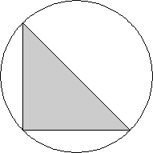 | 2. 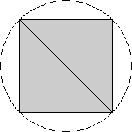 | 3. 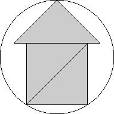 | ||
| r = 1/√2 = .707+ Trivial. | r = 1/√2 = .707+ Trivial. | r = (6 + √2)/8 = .926+ Found by Serhiy Grabarchuk in April 2005. |
| 4. 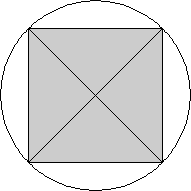 | 5.
| 6. 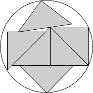 | ||
| r = 1 Trivial. | r = 1.125+ Found by Maurizio Morandi in July 2007. | r = 1.198+ Found by Maurizio Morandi in July 2007. |
| 7. 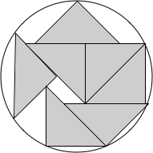 | 8. 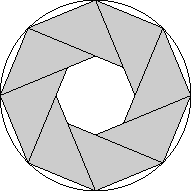 | 9. | ||
| r = 1.265+ Found by Maurizio Morandi in August 2007. | r = √(1+1/√2) = 1.306+ Found by Serhiy Grabarchuk in April 2005. | r = 1.377+ Found by David W. Cantrell in August 2007. |
| 10. 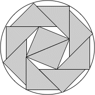 | 11.
| 12. 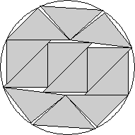 | ||
| r = 1.428+ Found by Maurizio Morandi in July 2007. | r = 1.480+ Found by David W. Cantrell in August 2007. | r = 1.509+ Found by David W. Cantrell in August 2007. |
| 13. 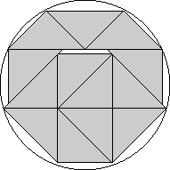 | 14. 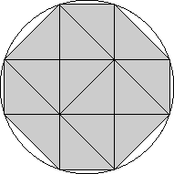 | 15. 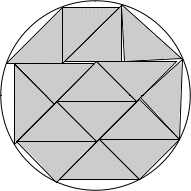 | ||
| r = 1.559+ Found by Serhiy Grabarchuk in April 2005. | r = √10/2 = 1.581+ Found by Serhiy Grabarchuk in April 2005. | r = 1.667+ Found by Maurizio Morandi in July 2007. |
| 16. | 17. | 18. 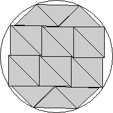 | ||
| r = 1.746+ Found by David W. Cantrell in August 2007. | r = 1.806+ Found by David W. Cantrell in August 2007. | r = 1.834+ Found by David W. Cantrell in August 2007. |